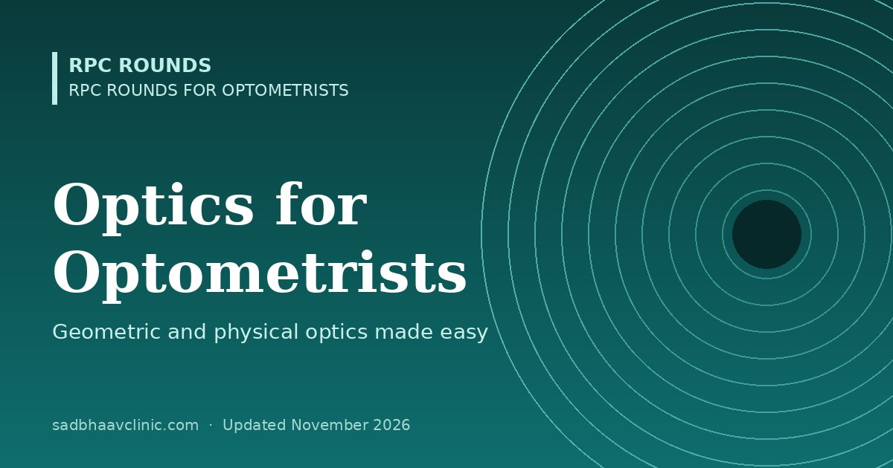

Last updated: November 2026
RPC Rounds for Optometrists · B.Optom study guide
Optics is the foundation of everything an optometrist does: every spectacle, contact lens and instrument works by bending, reflecting or filtering light. This page gathers the geometric optics you use daily and the physical optics that explains anti-reflection coatings, polarised lenses and lasers, with the numbers examiners ask for.
| Concept | Key rule | Example in practice |
|---|---|---|
| Refractive index (n) | n = speed of light in vacuum ÷ speed in the medium | Air 1.000, water and aqueous 1.333, cornea 1.376, crown glass 1.523, CR-39 1.498, polycarbonate 1.586 |
| Snell's law | n₁ sin i = n₂ sin r | Light bends towards the normal entering a denser medium |
| Critical angle and total internal reflection | sin c = n₂ ÷ n₁ (going from dense to less dense) | Why the angle cannot be seen without a gonioscopy lens; optical fibres in endoilluminators |
| Vergence | L = n ÷ l (l in metres); converging light is positive | Light from 50 cm reaches the eye with −2.00 D vergence |
| Thin lens formula | L′ = L + F (image vergence = object vergence + lens power) | Object at 25 cm (−4.00 D) through a +10.00 D lens: L′ = +6.00 D, image at 16.7 cm |
| Lens power | F = 1 ÷ f (metres) | A +4.00 D lens has a focal length of 25 cm |
| Magnification of a simple magnifier | M = F ÷ 4 (relative to 25 cm) | +20 D magnifier ≈ 5× |
| Prism power | 1Δ deviates light 1 cm at 1 m; Prentice: P = c (cm) × F (D) | 5 mm decentration of a −6.00 D lens gives 3Δ |
| Mirrors | Concave mirrors converge, convex diverge; F = 2 ÷ r | Keratometer measures the cornea as a convex mirror |
| Aberration | What it is | Clinical relevance |
|---|---|---|
| Chromatic | Shorter wavelengths (blue) bend more than longer (red) | Duochrome test; low Abbe-value lenses (polycarbonate, high index) show colour fringes off-axis |
| Spherical | Peripheral rays focus closer than central ones | Night myopia; aspheric IOLs and lenses reduce it |
| Coma | Off-axis point source looks comet-shaped | Decentred contact lenses and keratoconus |
| Oblique astigmatism | Looking obliquely through a lens creates unwanted cylinder | Corrected by best-form (Tscherning) lens design and correct pantoscopic tilt |
| Distortion | Magnification changes across the field (pincushion with plus, barrel with minus) | Adaptation problems with high-power spectacles |
| Curvature of field | Image lies on a curved surface | Lens design compromises with oblique astigmatism |
| Phenomenon | Principle | Use in eye care |
|---|---|---|
| Interference | Waves add (constructive) or cancel (destructive) | Anti-reflection coatings: a quarter-wavelength layer cancels reflected light; OCT uses low-coherence interferometry; biometry (IOLMaster) uses partial coherence interferometry |
| Diffraction | Light spreads at an edge or small aperture | Limits resolution with very small pupils (under about 2 mm); diffractive multifocal IOLs split light into near and distance foci; pinhole best at about 1.2 mm |
| Polarisation | Light vibrating in one plane only | Polarised sunglasses cut glare reflected from water and roads; stereotests (Titmus, Randot) use polarised images; scanning laser polarimetry measured the RNFL |
| Scattering | Light deflected by small particles; short wavelengths scatter more (Rayleigh) | Blue sky; glare from cataract and corneal haze; Tyndall effect (flare) in the anterior chamber |
| Fluorescence | Absorbs one wavelength, emits a longer one | Fluorescein (absorbs blue about 490 nm, emits green about 520 nm): use the cobalt blue light and a yellow filter |
| Lasers | Monochromatic, coherent, collimated light | Nd:YAG 1064 nm (photodisruption), excimer 193 nm (photoablation), green 532 nm (photocoagulation) |
The visible spectrum runs from about 380 nm (violet) to 760 nm (red). Ultraviolet B (280–315 nm) is absorbed mainly by the cornea (photokeratitis), UVA (315–400 nm) mainly by the lens; infrared heats the iris and lens (glassblower's cataract).
Practical pearls
Where students slip
Related: Clinical Optics Made Easy: Vergence, Prisms and Magnification, Formulas in Ophthalmology, Prentice's Rule: Induced Prism With Worked Examples, Vertex Distance: Formula, Examples and When It Matters, Lasers in Ophthalmology Made Easy: Time, Colour and Use. Back to the optometry curriculum.
📘 Want more exam-ready material? See Most Commons in Ophthalmology on Kindle, or browse all my books.
Looking for an eye specialist in Ahmedabad? Eye Department at Sadbhaav or book a consultation with Dr. Dhaval Patel.